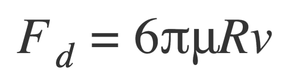

Links:
Report Summary: Technical Approach
We are basing our final project on top of Project 4. We have started implementing OpenMP to speed up the simulation time. We began by refactoring some of the common processes/math operations inside the for loops, and by putting them outside the loop. Then, we used OpenMP pragma to parallelize almost all the for loops that we used for the simulation. To successfully use OpenMP, we added a flag for OpenMP in CMakeList.txt. Then we implemented our own timer to allow us to quantify the speedup. We also modified the code to be able to specify the number of frames with -t tag in the command line. Using OpenMP, we saw that the simulation time improved by approximately a factor of 3. We consider this significant progress on speeding up the simulation time.
Aside from that, we began implementing different type of clothes. In all three types of clothing, we increased the weight of each item 10 times to make the weight of the clothing heavier so that its behavior is closer to the real fabric.
In the first type of cloth, we change to half the maximum length of the bending spring for every 6-point mass in height and width directions. In contrast, we double this parameter for one spring between each pair of them because the cloth will not be tight a lot. Also, for these longer bending springs, we decrease the spring coefficient more than usual because we need them to be looser in the cloth. As a result, the cloth will be bumpy in some small square areas, and it always keeps its form in different conditions.
In the second type of cloth, we change to 0.7 the maximum length of the bending spring for every 6-point mass in horizontal directions. It causes the cloth to have some wrinkles in the vertical direction. It is like a cloth that we have folded and ironed. To prevent the fabric from shrinking too much, we tripled the maximum length of the structural-type spring in some places horizontally and made the spring coefficient 10 times weaker. In this type, we manipulate both structural and bending spring types.
The third type of cloth is fancier. It is wavy in horizontal, but it is straight or changes the wave direction when more mass falls on it. We reach this type with a trick. First, we find each bending spring that has a sixth position in vertical and horizontal. Then, if it is a vertical spring, we decrease its max length to 0.8 of the default. It causes the cloth to be wavy but not forced in all places.
We have also implemented uniform wind fields. Our implementation was motivated by the general techniques described in a 1991 SIGGRAPH paper by Wejchert and Haumann titled “Animation Aerodynamics”. To approximate the interaction with a uniform wind field and our cloth, we used Stoke’s Law:  which states that the drag force Fd acting opposite to a particle moving through a fluid with a dynamic viscosity mu is proportional to the radius R of the particle and the velocity v of the liquid relative to the particle. The only modifications to this formula was to use the surface area of the cloth instead of radius and to scale the drag force by the absolute value of the dot product between the pointMass normal and the wind vector. We take the absolute value of the dot product because the force from the wind should act in the same direction regardless of the orientation of the cloth face. There are still some things left to improve in our implementation of wind such as checking for objects in front of the cloth and setting the surface area of the boundary masses to be lower than the other masses. Also, we implemented an option to view the wind field visually as a vector field in the simulation to make it easier to see the interaction between the cloth and different wind speeds and directions.
Here is our updated work plan: